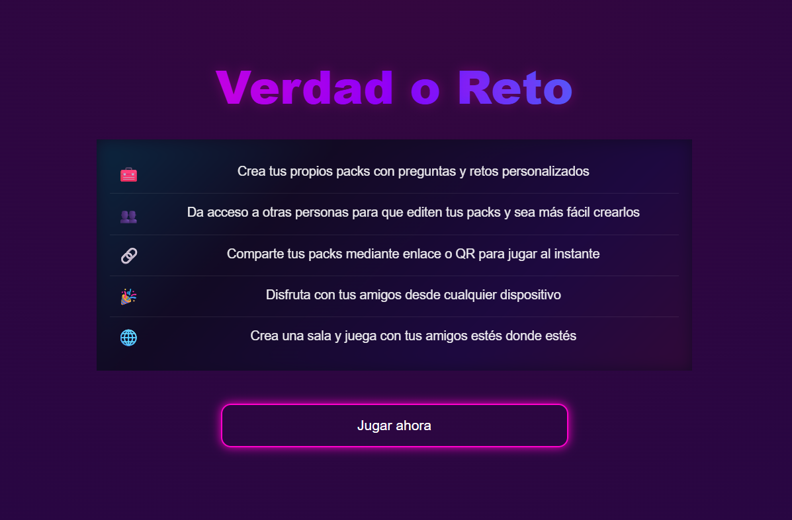
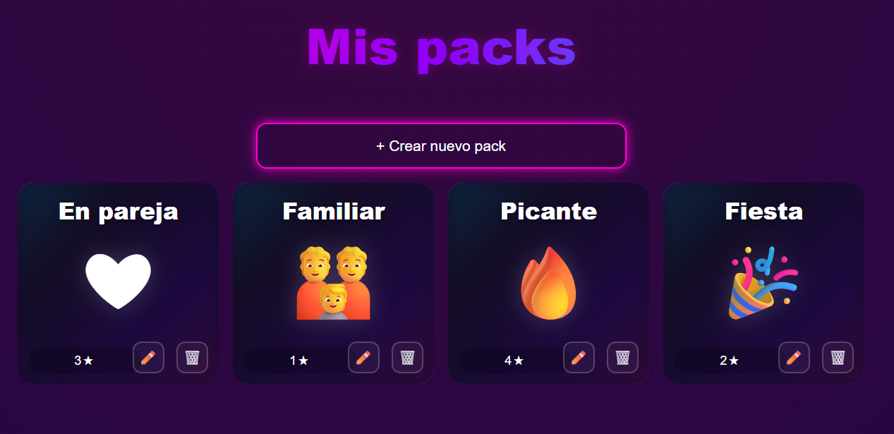
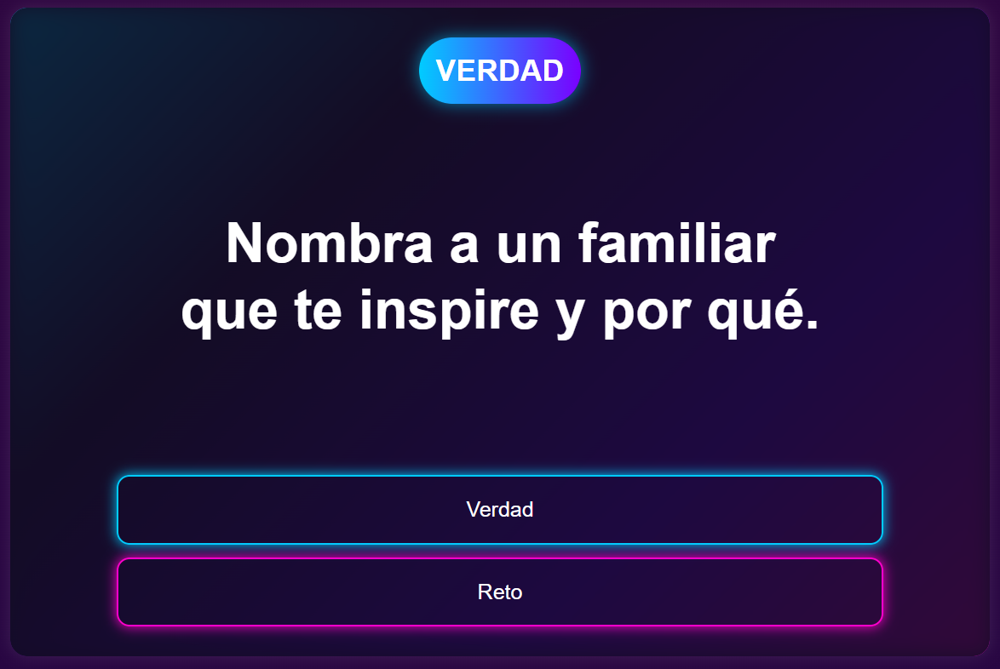
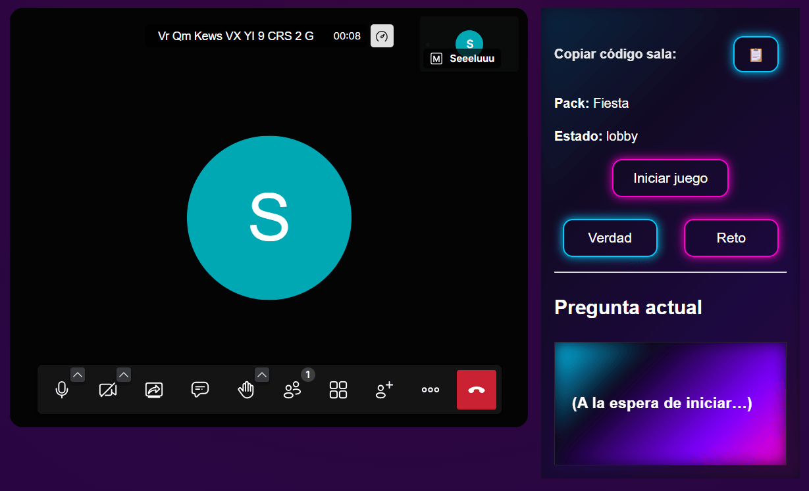

TFG: Verdad o Reto
Aplicación web desarrollada con Django para crear packs personalizados, compartirlos mediante QR y jugar online en tiempo real.
- Django, autenticación y modelos relacionales.
- Salas online con Jitsi y WebSockets.
- Despliegue web en Render.

Smart Dog Assistant
En desarrollo... No voy a dar muchas pistas de este proyecto 😉
- Backend con FastAPI y PostgreSQL.
- Frontend con React y Vite.
- Autenticación JWT multiusuario.

Automatización de procesos
Procesamiento e integración de datos para facturas, validaciones y reporting técnico.
- C# y tratamiento de ficheros Excel/CSV/TXT.
- Power Automate, SharePoint y Dataverse.
- Documentación técnica y soporte.

Administración web WordPress
Gestión y mejora de web corporativa con foco en contenidos, SEO, UX y rendimiento.
- WordPress, Divi y optimización visual.
- SEO on-page y actualización de contenidos.
- Resolución de incidencias técnicas.

Gestión de datos
Tratamiento y transformación de información para procesos internos y soluciones low-code.
- Excel, SQL y validaciones.
- Power Apps y SharePoint.
- Automatización de flujos.

APIs y backend
Proyectos de backend y servicios REST desarrollados durante formación y proyectos personales.
- Diseño de endpoints y lógica de negocio.
- Persistencia en base de datos.
- Buenas prácticas de organización.